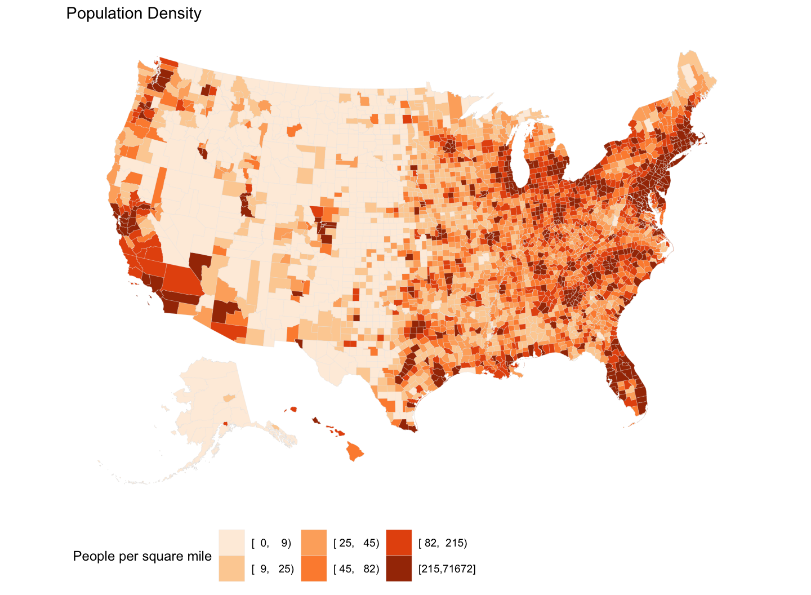
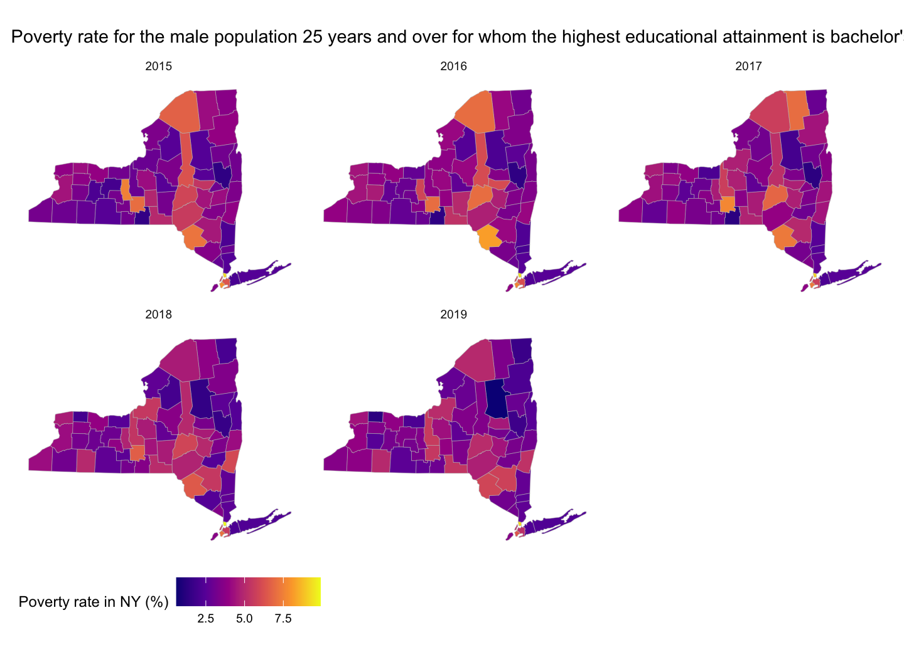

March 1, 2022
Draw maps
R packages
library(tidyverse) library(socviz) library(ggthemes) theme_set(theme_minimal())
Map U.S. state-level data
- The
socviz::electiondataset has various measures of the vote and vote shares by state.
election %>% select(state, total_vote,
r_points, pct_trump, party, census) %>%
sample_n(5)
## # A tibble: 5 × 6 ## state total_vote r_points pct_trump party census ## <chr> <dbl> <dbl> <dbl> <chr> <chr> ## 1 Vermont 315067 -26.4 30.3 Democratic Northeast ## 2 Nebraska 844227 25.0 58.8 Republican Midwest ## 3 Alaska 318608 14.7 51.3 Republican West ## 4 Wyoming 255849 46.3 68.2 Republican West ## 5 Mississippi 1211088 17.8 57.9 Republican South
- We don’t have to represent spatial data spatially.
Map U.S. state-level data
party_colors <- c("#2E74C0", "#CB454A") # Hex color codes for Dem Blue and Rep Red
p0 <- ggplot(data = subset(election, st %nin% "DC"),
mapping = aes(x = r_points,
y = reorder(state, r_points),
color = party))
p1 <- p0 + geom_vline(xintercept = 0, color = "gray30") +
geom_point(size = 2)
p2 <- p1 + scale_color_manual(values = party_colors)
p3 <- p2 + scale_x_continuous(breaks = c(-30, -20, -10, 0, 10, 20, 30, 40),
labels = c("30\n (Clinton)", "20", "10", "0",
"10", "20", "30", "40\n(Trump)"))
p3 + facet_wrap(~ census, ncol=1, scales="free_y") +
guides(color = "none") + labs(x = "Point Margin", y = "") +
theme(axis.text=element_text(size=8))
Map U.S. state-level data

Map U.S. state-level data
- Let us get a data frame of the US state map
us_states <- map_data("state")
head(us_states)
## long lat group order region subregion ## 1 -87.46201 30.38968 1 1 alabama <NA> ## 2 -87.48493 30.37249 1 2 alabama <NA> ## 3 -87.52503 30.37249 1 3 alabama <NA> ## 4 -87.53076 30.33239 1 4 alabama <NA> ## 5 -87.57087 30.32665 1 5 alabama <NA> ## 6 -87.58806 30.32665 1 6 alabama <NA>
dim(us_states)
## [1] 15537 6
Map U.S. state-level data
p <- ggplot(data = us_states,
mapping = aes(x = long, y = lat,
group = group))
p + geom_polygon(fill = "white", color = "black")
- A map is a set of lines drawn in the right order on a grid.
Map U.S. state-level data

Map U.S. state-level data
- Let’s
fillthe map.
p <- ggplot(data = us_states,
aes(x = long, y = lat,
group = group, fill = region))
p + geom_polygon(color = "gray90", size = 0.1) + guides(fill = FALSE)
Map U.S. state-level data

Map U.S. state-level data
- Let’s deal with the projection.
- By default, the map is plotted using the venerable Mercator projection.
- The Albers projection is nicer.
p <- ggplot(data = us_states,
mapping = aes(x = long, y = lat,
group = group, fill = region))
p + geom_polygon(color = "gray90", size = 0.1) +
coord_map(projection = "albers", lat0 = 39, lat1 = 45) +
guides(fill = FALSE)
We can transform the default projection used by
geom_polygon(), via thecoord_map()function.- The Albers projection requires two latitude parameters,
lat0andlat1.
- The Albers projection requires two latitude parameters,
Map U.S. state-level data

Map U.S. state-level data
- Let’s get the
electiondata on to the map
election$region <- tolower(election$state) us_states_elec <- left_join(us_states, election)
In the map data,
us_states, the state names (in a variable namedregion) are in lower case.Here we can create a variable in the
electiondata frame to correspond to this, using thetolower()function to convert the state names.It is important to know your data and variables well enough to check that they have merged properly.
- FIPS code is useful in joining the data.
Map U.S. state-level data
p0 <- ggplot(data = us_states_elec,
aes(x = long, y = lat,
group = group, fill = party))
p0 + geom_polygon(color = "gray90", size = 0.1) +
coord_map(projection = "albers", lat0 = 39, lat1 = 45)
- We use our
partycolors for thefill.
Map U.S. state-level data

Map U.S. state-level data
p1 <- p0 + geom_polygon(color = "gray90", size = 0.1) +
coord_map(projection = "albers", lat0 = 39, lat1 = 45)
p2 <- p1 + scale_fill_manual(values = party_colors) +
labs(title = "Election Results 2016", fill = NULL)
p2 + theme_map()
Map U.S. state-level data

Map U.S. state-level data
- To the
fillaethetic, let’s try a continuous measure, such as the percentage of the vote received by Donald Trump (pct_trump).
p0 <- ggplot(data = us_states_elec,
mapping = aes(x = long, y = lat, group = group, fill = pct_trump))
p1 <- p0 + geom_polygon(color = "gray90", size = 0.1) +
coord_map(projection = "albers", lat0 = 39, lat1 = 45)
p1 + labs(title = "Trump vote") + theme_map() + labs(fill = "Percent")
Map U.S. state-level data

Map U.S. state-level data
Blue is not the color we want here.
The color gradient runs in the wrong direction.
Let’s fix these problems using
scale_fill_gradient():
p2 <- p1 + scale_fill_gradient(low = "white", high = "#CB454A") +
labs(title = "Trump vote")
p2 + theme_map() + labs(fill = "Percent")
Map U.S. state-level data
Map U.S. state-level data
- For election results, we might prefer a gradient that diverges from a midpoint.
- The
scale_gradient2()function gives us a blue-red spectrum that passes through white by default. - We can also re-specify the mid-level color along with the
highandlowcolors.
- The
p0 <- ggplot(data = us_states_elec,
mapping = aes(x = long, y = lat, group = group, fill = d_points))
p1 <- p0 + geom_polygon(color = "gray90", size = 0.1) +
coord_map(projection = "albers", lat0 = 39, lat1 = 45)
p2 <- p1 + scale_fill_gradient2() + labs(title = "Winning margins")
p2 + theme_map() + labs(fill = "Percent")
Map U.S. state-level data

Map U.S. state-level data
- From the
scale_gradient2()function, we can also re-specify the mid-level color along with thehighandlowcolors.
p3 <- p1 + scale_fill_gradient2(low = "red",
mid = scales::muted("purple"),
high = "blue",
breaks = c(-25, 0, 25, 50, 75))
p3 + theme_map() + labs(fill = "Percent", title = "Winning margins")
Map U.S. state-level data

Map U.S. state-level data
- If you take a look at the gradient scale for this first “purple America” map,
p3, you’ll see that it extends very high on the Blue side.- This is because Washington DC is included in the data.
- If we omit Washington DC, we’ll see that our color scale shifts.
p0 <- ggplot(data = subset(us_states_elec,
region %nin% "district of columbia"),
aes(x = long, y = lat, group = group, fill = d_points))
p3 <- p1 + scale_fill_gradient2(low = "red",
mid = scales::muted("purple"),
high = "blue",
breaks = c(-25, 0, 25, 50, 75))
p3 + theme_map() + labs(fill = "Percent", title = "Winning margins", caption = "DC is omitted.")
Map U.S. state-level data
America’s ur-choropleths
Choropleth maps display divided geographical areas or regions that are colored, shaded or patterned in relation to a data variable.
County-level US choropleth maps can be aesthetically pleasing, because of the added detail they bring to a national map.
The county-level datasets (
county_mapandcounty_data) are included in thesocvizlibrary.- The county map data frame,
county_map, has been processed a little in order to transform it to an Albers projection, and also to relocate (and re-scale) Alaska and Hawaii.
- The county map data frame,
America’s ur-choropleths
county_map %>% sample_n(5)
county_data %>%
select(id, name, state, pop_dens, pct_black) %>%
sample_n(5)
county_full <- left_join(county_map, county_data, by = "id")
The
idfield is the FIPS code for the county.pop_densis population density.pct_blackis percent of African-American population.We merge the data frames using the shared FIPS
idcolumn.
Map U.S. county-level data
p <- ggplot(data = county_full,
mapping = aes(x = long, y = lat,
fill = pop_dens,
group = group))
p1 <- p + geom_polygon(color = "gray90", size = 0.05) + coord_equal()
p1
p1object produces a legible map, but by default it chooses an unordered categorical layout.This is because the
pop_densvariable is not ordered.pop_densis an un-ordered discrete variable.summary(county_full$pop_dens)The use of
coord_equal()makes sure that the relative scale of our map does not change even if we alter the overall dimensions of the plot.
Map U.S. county-level data
Map U.S. county-level data
p2 <- p1 + scale_fill_brewer(palette = "Blues",
labels = c("0-10", "10-50", "50-100", "100-500","500-1,000", "1,000-5,000", ">5,000"))
p2 + labs(fill = "Population per\nsquare mile") +
theme_map() +
guides(fill = guide_legend(nrow = 1)) +
theme(legend.position = "bottom")
We can manually supply the right sort of scale using the
scale_fill_brewer()function, together with a nicer set of labels.We can also use the
guides()function to make sure each element of the key in the legend appears on the same row.
Map U.S. county-level data
Map U.S. county-level data
- We can now do exactly the same thing for our map of percent African-American population by county.
pct_blackis an un-ordered factor variable.summary(county_full$pct_black)
p <- ggplot(data = county_full,
mapping = aes(x = long, y = lat, fill = pct_black,
group = group))
p1 <- p + geom_polygon(color = "gray90", size = 0.05) + coord_equal()
p2 <- p1 + scale_fill_brewer(palette="Greens")
p2 + labs(fill = "US Population, Percent Black") +
guides(fill = guide_legend(nrow = 1)) +
theme_map() + theme(legend.position = "bottom")
Map U.S. county-level data
Map U.S. county-level data
Let’s draw two new county-level choropleths.
We have a
pop_dens6variable that divides the population density into six categories.We will map the color scale to the value of variable.
orange_pal <- RColorBrewer::brewer.pal(n = 6, name = "Oranges") orange_pal orange_rev <- rev(orange_pal) orange_rev
- We use the
RColorBrewer::brewer.pal()function to manually create two palettes.- The
brewer.pal()function produces evenly-spaced color schemes.
- The
- We use the
rev()function to reverse the order of a color vector.
Map U.S. county-level data
pop_p <- ggplot(data = county_full,
mapping = aes(x = long, y = lat,
fill = pop_dens6,
group = group))
pop_p1 <- pop_p + geom_polygon(color = "gray90", size = 0.05) + coord_equal()
pop_p2 <- pop_p1 + scale_fill_manual(values = orange_pal)
pop_p2 + labs(title = "Population Density",
fill = "People per square mile") +
theme_map() + theme(legend.position = "bottom")
Map U.S. county-level data

Map U.S. county-level data
pop_p2_rev <- pop_p1 + scale_fill_manual(values = orange_rev)
pop_p2_rev + labs(title = "Reverse-coded Population Density",
fill = "People per square mile") +
theme_map() + theme(legend.position = "bottom")
Map U.S. county-level data
Map U.S. county-level data
- Let’s consider a county map of a continuous variable, such as
per_gop_2016.- Check
class(county_full$per_gop_2016).
- Check
gop_p <- ggplot(data = county_full,
mapping = aes(x = long, y = lat,
fill = per_gop_2016,
group = group))
gop_p1 <- gop_p + geom_polygon(color = "gray70", size = 0.05) + coord_equal()
gop_p1
Map U.S. county-level data
Map U.S. county-level data
- For a continuous variable, we can use
scale_fill_gradient(),scale_fill_gradient2(), orscale_fill_gradient2()function:scale_fill_gradient()produces a two-color gradient.scale_fill_gradient2()produces a three-color gradient with specified midpoint.scale_fill_gradientn()produces an n-color gradient.
- For
scale_fill_gradient2(), choose the value and color formidpointcarefully.
Map U.S. county-level data
gop_p2 <- gop_p1 + scale_fill_gradient2(
low = '#2E74C0', # from party_colors for DEM
mid = '#FFFFFF', # transparent white
high = '#CB454A', # from party_colors for GOP
na.value = "grey50",
midpoint = .5)
gop_p2 + labs(title = "US Presidential Election 2016",
fill = "Trump vote share") +
theme_map() + theme(legend.position = "bottom")
Map U.S. county-level data
Statebins
- As an alternative to state-level choropleths, we can consider
statebins.
# install.packages("statebins")
library(statebins)
p <- ggplot( data = election,
mapping = aes( state = state, fill = pct_trump ) )
p1 <- p + geom_statebins(lbl_size = 5,
border_col = "grey90", border_size = 1)
p2 <- p1 + labs(fill = "Percent Trump") +
coord_equal() +
theme_statebins( legend_position = c(.45, 1) ) +
theme( legend.direction="horizontal" )
p2 + scale_fill_gradient2(
low = '#2E74C0', # from party_colors for DEM
mid = '#FFFFFF', # transparent white
high = '#CB454A', # from party_colors for GOP
na.value = "grey50",
midpoint = 50) # set the midpoint value
Statebins
Statebins
- Let’s remove DC and use
scale_fill_gradient().
p <- ggplot(data = subset(election, st != "DC") ,
mapping = aes(state=state, fill=pct_clinton))
p1 <- p + geom_statebins(lbl_size = 5,
border_col = "grey90",
border_size = 1)
p2 <- p1 + labs(fill = "Percent Clinton") +
coord_equal() +
theme_statebins( legend_position = c(.45, 1) ) +
theme( legend.direction="horizontal" )
p2 + scale_fill_gradient(
low = '#FFFFFF', # transparent white
high = '#2E74C0', # from party_colors for DEM
na.value = "grey50") # set the midpoint value
Statebins
Statebins
Let’s use
scale_fill_manual()tofillcolor byparty.legend_positionallows for adjusting a coordinate for the legend position.
p <- ggplot(data = election ,
mapping = aes(state=state, fill=party))
p1 <- p + geom_statebins(lbl_size = 5,
border_col = "grey90",
border_size = 1)
p2 <- p1 + labs(fill = "Winner") +
coord_equal() +
theme_statebins( legend_position = c(.25, 1) ) +
theme( legend.direction="horizontal",
legend.title = element_text(size=30),
legend.text = element_text(size=30) )
p2 + scale_fill_manual( values = c(Republican = "darkred",
Democratic = "royalblue"))
Statebins
Statebins
- Let’s discretize a continuous variable using
scale_fill_gradient()withbreaks.
p <- ggplot(data = election ,
mapping = aes(state = state, fill=pct_trump))
p1 <- p + geom_statebins(lbl_size = 5,
border_col = "grey90",
border_size = 1)
p2 <- p1 + labs(fill = "Percent Trump") +
coord_equal() +
theme_statebins( legend_position = c(.2, 1) ) +
theme( legend.direction="horizontal")
p2 + scale_fill_gradient(breaks = c(5, 21, 41, 48, 57),
labels = c("< 5", "5-21", "21-41", "41-58", "> 57"),
low = "#f9ecec", high = "#CB454A") +
guides(fill = guide_legend())
Statebins
Small-multiple maps
- Sometimes we have geographical data with repeated observations over time.
- A common case is to have a country- or state-level measure observed over a period of years (Panel data).
- Let’s consider consider the poverty rate determined by level of educational attainment in NY.
NY_socioecon_geo_poverty <- read.table( 'https://bcecon.github.io/NY_socioecon_geo_poverty.csv', sep = ',', header = TRUE, stringsAsFactor = TRUE ) library(viridis)
The
viridiscolors run in low-to-high sequences and combines perceptually uniform colors with easy-to-see, easily-contrasted hues along their scales.- The
scale_fill_viridis_c()function is for continuous data. - The
scale_fill_viridis_d()function is for discrete data.
- The
Small-multiple maps
p <- ggplot(data = NY_socioecon_geo_poverty,
mapping = aes(x = long, y = lat, group = group,
fill = c04_058 ))
p1 <- p + geom_polygon(color = "grey", size = 0.1) +
coord_map(projection = "albers", lat0 = 39, lat1 = 45)
p2 <- p1 + scale_fill_viridis_c(option = "plasma") + theme_map()
p2 + facet_wrap(~ year, ncol = 3) +
theme(legend.position = "bottom",
strip.background = element_blank()) +
labs(fill = "Poverty rate in NY (%)",
title = "Poverty rate for the male population 25 years and over \nfor whom the highest educational attainment is bachelor's degree")
- We facet the maps just like any other small-multiple with
facet_wrap().
Small-multiple maps
